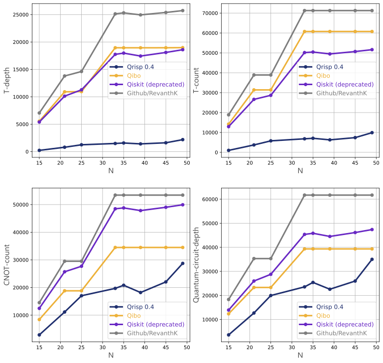
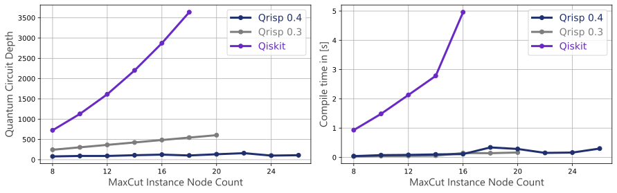

Qrisp 0.4#
The latest update of Qrisp is (once again) the biggest (so far)! We integrated a large variety of features, but also worked a lot on the classical performance, making Qrisp algorithms more scalable than ever.
Shor’s Algorithm and modular arithmetic#
With 0.4 we integrated the infrastructure to facilitate the implementation and compilation of Shor’s algorithm. Most notably:
The QuantumModulus quantum type, which allows you to utilize modular arithmetic in your algorithms with a minimal amount of knowledge of the underlying circuits.
Furthermore, we implemented the
qclaintroduced by Wang et al. The previously mentioned arithmetic can be adapted to use this adder (or any other adder for that matter!).We wrote a tutorial for Shor’s algorithm in Qrisp and created a dead simple interface for factoring numbers.
Decrypt your neighbors pizza delivery order to make them eat pineapples! 😈
As we found out, implementations of Shor’s algorithm that are able to return a QuantumCircuit in a finite amount of time are an extremely rare sight. After some searching, we could find some competitors for a benchmark:

This demonstrates how powerful the Qrisp version is compared to other compilers/implementations. The presented values are averaged over several choices of \(a\) per \(N\). T-depth and T-count are computed under the (extremely optimistic) assumption that parametrized phase gates can be executed in unit time and unit cost. Without this assumption the Qrisp implementation brings a speed-up of almost 3 orders of magnitude!
Compiler upgrades#
The compile function received two important upgrades:
Due to another topological ordering step, this function can now reduce the depth in many cases by a significant portion with minimal classical performance overhead.
It is now possible to specify the time each gate takes to optimize the overall run time in a physical execution of the quantum circuit. Read more about this feature here. This especially enables compilation for fault tolerant backends, as they are expected to be bottlenecked by T-gates.
This plot highlights how the Qrisp compiler evolved compared to the last version (and its competitors). It shows the circuit depth (as acquired with depth) for the QAOA algorithm applied to a MaxCut problem. We benchmarked the code that is available as tutorial.

Algorithmic primitives#
We added the following algorithmic primitives to the Qrisp repertoire:
amplitude_amplificationis an algorithm, which allows you to boost the probability of measuring your desired solution.QAEgives you an estimate of the probability of measuring your desired solution.The
gidneyandjonesmethods for compilingmcxgates with optimal T-depth in a fault-tolerant setting.The
gidney_adderas documented here.
QUBO optimization#
QUBO is short for Quadratic Unconstrained Binary Optimization and a problem type, which captures a large class of optimization problems. QUBO instances can now be solved within the QAOA module.
Simulator#
The Qrisp simulator received multiple powerful performance upgrades such as a much faster sparse matrix multiplication algorithm and better statevector factoring. These upgrades facilitate the simulation of extremely large circuits (in some cases, we observed >200 qubits)!
Network interface#
For remote backend queries, Qrisp now uses the network interface developed in the SequenC project. This project aims to build a uniform, open-source quantum cloud infrastructure. Note that specific backend vendors like IBMQuantum can still be called via VirtualBackends.
Docker Container#
Using the new network interface, we set up a Docker container with a bunch of simulators. This gives you access to 8 new simulators without having to go through the hassle of installing and converting the compilation results. You can simply call docker pull and docker run and that’s it!
Minor features#
Implemented
&,|, and^operators for general QuantumVariables.Classical performance upgrade for Qrisp’s internal logic synthesis function, facilitating faster execution of many algorithms.
CNOT and T-depth can now be inferred from QuantumCircuits via
cnot_depthandt_depthImplemented the
train_functionmethod to reuse QAOA circuits in higher order algorithms.Implemented the
compile_circuitmethod to give direct access to the circuit executed byrun.==and!=for QuantumVariable are now compiled using the ConjugationEnvironment enabling a more efficientcustom_control.Wrote the
inpl_adder_testfunction to verify a user specified function is a valid adder.
Bug-fixes#
Fixed a bug that caused false results in some simulations containing a Y-gate.
Fixed a bug that prevented proper QFT cancellation within the
compilemethod in some cases.Fixed a bug that prevented proper verification of correct automatic uncomputation in some cases.
Fixed a bug that caused false determination of the unitary of controlled gates with a non-trivial control state.
Fixed a bug that caused problems during circuit visualisation on some platforms.
Fixed a bug that caused the simulation progress bar to not vanish after the simulation concluded.
Fixed a bug that introduced an extra phase in the compilation of dirty-ancillae supported
balaucaMCX gates.